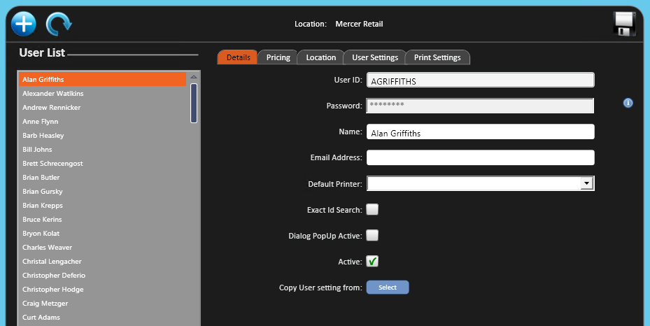
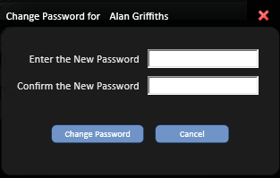
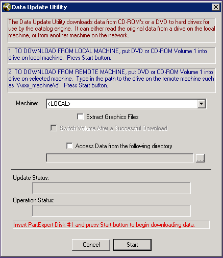
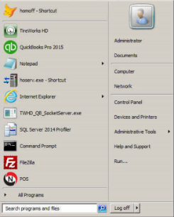

User Setup and Maintenance
Use User Setup to create users and salespersons.
- Go to Manage; Company Setup; Users.
Create a user

- Select Add .
- On the Details tab, enter the User ID you want. This is generally the first initial and last name in all caps.
- Enter a Password.
- Enter the Name (first and last name).
- Enter an Email Address, if applicable.
- Select a default printer if you want.
- Turn Exact Id Search on or off.
- Turn Dialog Pop Up Active on or off.
- Make sure Active is on. It's on by default.
- Select Save . "Successfully Saved" displays.
- To copy settings from another user, select that user in Copy User settings from. Do this only after the Details tab information is complete.
- A warning says this overwrites all settings of the user being created. Select Yes or No to continue.
- On the Pricing tab, turn on Allow Hand Pricing if you want.
- This lets the user override pricing when access rights don't permit it.
- Turn on Enforce Minimum Profit% and enter a percentage if you want.
- This lets the user override pricing down to the minimum profit percentage you set.
- Select the price levels the user can view and select .
- To select several, hold CTRL, make your selections, and then select .
- To select all, hold SHIFT, select the first and last levels, and then select .
- Select Save . "Successfully Saved" displays.
- On the Locations tab, select the stores the user can view and select .
- To select several, hold CTRL, make your selections, and then select .
- To select all, hold SHIFT, select the first and last stores, and then select .
- If the store list is long, use to search by ID or location name.
- Select Save . "Successfully Saved" displays.
- On the User Settings tab, select a skin from the dropdown. The default is black simple.
- Select the search font size. The default is medium.
- Turn on Hide Tire Search Results with Zero Quantity if you want.
- You can also turn this on or off on the search screen.
- Select the Service Package View Mode. The default is list view.
- Tabbed view is generally preferred.
- Turn on Hide Tire Search Results with Zero Warehouse Quantity if you want.
- You can also turn this on or off on the search screen.
- Turn on Hide Tire Search Results with Zero Distribution Quantity if you want.
- You can also turn this on or off on the search screen.
- Select Print Setup.
- The associated stores fill in from your selections on the Locations tab. You can set up printing differently for each associated store.
- Select the reports the user can print and select .
- To select several, hold CTRL, make your selections, and then select .
- To select all, hold SHIFT, select the first and last reports, and then select .
- Select a print option from the dropdown.
- Show Print Preview
- Skip Preview and Dialog: No print screen appears for viewing the document.
- Show Print Dialog Only
- Select the default printer name.
- Enter the number of copies to print for the report type.
- Turn on auto close if you want. This isn't recommended.
Change a user
Select the user in the list first. The list is sorted alphabetically by first name.
Note: To include inactive users in the user list, turn on . Inactive users appear at the bottom of the list.
To inactivate a user:
- On the Details tab, clear the active status and select Save . "Successfully Saved" displays.
To reset a password:
- On the Details tab, select at Password.
- Enter the New Password.
- Enter the new password again.
- Select Change Password.

To add price levels, stores or print options, follow the steps in Create a user above.
To remove price levels, stores or print options:
- Select the entries you want to remove.
- To select several, hold CTRL and select each one.
- Select Remove, or Remove All to remove every entry.
- Select Save . "Successfully Saved" displays.
Catalog updates
Parts and labor catalog data comes from the catalog your store is set up to use.
- Epicor ISE: Catalog data comes from Epicor's online service. Connection settings are under Manage; Company Setup; Epicor ISE Configuration and are normally set by TCS.
- TireGuide: Catalog data is maintained centrally by TCS.
Catalog updates are handled with TCS Support. Contact TCS Support if catalog data looks out of date.

